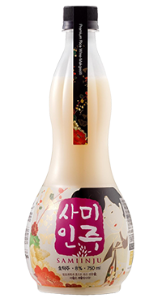
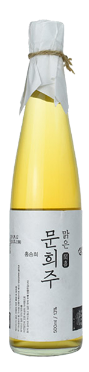

청산녹수는 폐교한 장성북초등학교를 양조장으로 조성했다. 운동장이 마당이고, 교실마다 양조 설비가 들어가 있다. 복도를 따라 걸으면 양조 설비와 작업하는 모습을 볼 수 있다.
대표제품인 사미인주는 유기농 햅쌀로 1차 발효를 하고, 인공 감미료 대신 벌꿀을 넣어 2차 저온 숙성을 한다. 선조들의 지혜가 담긴 주조 기술을 현대 과학으로 계승한 우리 술의 미래가 더욱 기대된다.
추천 메뉴
주저리에서 추천하는 탁주
★★★★★
한폭의 그림같은 막걸리
희양산막걸리 15% 500ml
9,500원
주종 | 탁주
용량 | 500ml
도수 | 15%
지역 | 경상북도 문경시
양조장 | 두술도가
원재료 | 쌀(국내산 무농약), 효모,
누룩(국내산 밀), 정제수
유통기한 | 병입일로 부터 3개월
보관법 | 10ºC 이하에서 냉장보관하세요.
★★★★
당신의 특별한 밤 12
디어미드나잇 블루 12% 500ml
20,000원
주종 | 탁주
용량 | 500ml
도수 | 12%
지역 | 경기도 평택
양조장 | 데일리 브루어리
원재료 | 평택쌀, 국
유통기한 | 2개월
보관법 | 10ºC 이하에서 냉장보관하세요.
★★★★
막걸리와 사이다를 한병에

나이스버디 6% 930ml
10,000원
주종 | 탁주
용량 | 930ml
도수 | 6%
지역 | 충청남도 서천군
양조장 | 종천주조장
원재료 | 정제수, 쌀(국내산), 누룩, 조효소제,
정제효소, 분말결정 포도당, 효소처리 스테비아,
밀함유
유통기한 | 제조일로부터 30일
보관법 | 10ºC 이하에서 냉장보관하세요.
★★★☆
홍국쌀로 만든 로제 막걸리

붉은 원숭이 15% 375ml
9,000원
주종 | 탁주
용량 | 375ml
도수 | 10.8%
지역 | 경기도 용인
양조장 | 술샘
원재료 | 홍국쌀, 물, 누룩
유통기한 | 제조일로부터 1년
보관법 | 살균 탁주로 실온보관이 가능합니다.
★★★★★
오미자 가득! 오!미자씨

오!미자씨 7.8% 650ml
9,500원
주종 | 탁주
용량 | 650ml
도수 | 7.8%
지역 | 경상북도 문경시
양조장 | 두술도가
원재료 | 쌀(국내산 무농약), 효모, 누룩(국내산 밀),
오미자(국내산 무농약), 설탕, 정제수
유통기한 | 병입일로부터 30일
보관법 | 10ºC 이하에서 냉장보관하세요.
introduction of brewery
양조장별 제품소개
울산 울주군 상북면 향산동길 48

복순도가 바로가기
대표술

복순도가 손막걸리

복순도가 손막걸리는 전통방식으로 가양주로써 언양과 울주에서 수확한 햅쌀과 직접 빚은 누룩을 이용해 빚어 만든 생막걸리입니다.
복순도가 손막걸리의 특징인 천연 탄산은 전통누룩이 발효되는 과정에서 자연히 생성됩니다. 이 천연 탄산은 청량감과 풍미를 높여줍니다.
- 2019년 전통주 전문점 협의회가 선정한 한 해동안 가장 많이 팔린 막걸리 부문 5위
- 2021년 국내 최대 규모의 전통주 전문점 백곰막걸리가 선정한 ‘한 해 동안 가장 많이 팔린 막걸리’
전남 장성군 장성읍 남양촌길 19
청산녹수 바로가기

대표술

사미인주
전남 해남군 화산면 해창길 1
해창주조장 바로가기
대표술
해창막걸리 9도
해창주조장 앞에는 바다로 이어지는 삼산천이 흐르고, 그 주변으로. 넓은 들이 펼쳐진다. 양조장은 술맛도 술맛이지만, 건축물과 정원이 아름다워 찾는 이가 많다. 1927년에 일본인이 들어와 일본식 가옥을 짓고 정원을 가꾸며 산 이곳에는 40여 종의 식물이 자라고 있고, 마당에는 수석과 이끼가 자리한다.
대표 제품인 해창막걸리는 오병인 대표가 자신이 마시기 위해 감미료를 빼면서 더욱 주목받게 되었다. 찹쌀과 멥쌀의 적절한 조화로 단맛을 잡았는데 알코올 함량은 6%, 9%, 12%, 18%의 다양한 제품을 만날 수 있다.


경북 문경시 동로면 노은1길 49-15

문경주조 바로가기

문경시 동로면소재지 비단천가, 굽이굽이 깊은 곳에 문경주조가 자리한다. 2008년 출시한 오미자 막걸리는 과일이 들어간 국내 첫 막걸리다. 2013년에는 무감미료 수제 막걸리 ‘문희’를 선보였다. 전통. 누룩을 사용하고, 소량으로 빚어 100일 이상 숙성해 유리병에 담아낸다.
2017년 개발한 스파클링 막걸리 ‘오희’는 이듬해 평창동계올림픽에서 건배주로 선정되어 축배의 술이 되었다. 2012년 고용노동부로부터 CLEAN 사업장 인증까지 받아 깨끗한 환경에서 깨끗하고 양심 있게 술을 빚어내고 있다.
대표술

문희
충북 옥천군 이원면 묘목로 113
이원양조장 바로가기
대표술

향수

이원양조장에 들어서면 새로운 섬에 발을 들인 것처럼 좀 전까지 있던 세계와 단절되는 묘한 기분에 사로잡힌다. 건물만 992㎡(300평), 부지가 6612㎡(3000평)로 구석구석 살아있는 박물관에 놓인 것 같다.
1930년 창업한 이원양조장은 증손자인 강현준 대표가 4대로서 명맥을 잇고 있다. 옥천 출신인 정지용 시인의 작품에서 가져온 ‘향수’는 아버지가 젊은 날 빚었던 밀 막걸리를 재현한 것이다. 아버지의 아버지가 그랬던 것처럼 지역 농산물과 직접 만든 누룩으로 우직하게 술을 빚는다.
경기도 화성시 정남면 서봉로 835

배혜정도가 바로가기
대표술
부자 16º
배혜정도가는 1998년 창사 이후 우리나라 문화인 막걸리의 고급화 및 세계화를 위해 노력하며 막걸리의 고부가가치화를 선도해오고 있다. 그리하여 자체적으로 개발한 액상 누룩에 대한 제조방법특허를 보유하고 있고, 기존 제품들과 차별화되는 생쌀발효법으로 술을 빚으며, 원료의 품질도 타협하지 않아 프리미엄 탁주의 대명사로 자리매김하였다.
양조장 1층에 시음 카페가 있고, 2층에는 강의와 체험 프로그램 등이 진행된다. '부자' 시리즈는 알코올 도수 10, 13, 16도로 출시하며, 쌀,배,사과,포도 등의 원료로 증류주인 '로아' 시리즈도 만나볼수 있다.